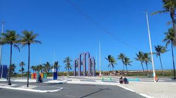

Praia de Atalaia

Na orla de Atalaia exitem opções de lazer como bares e casas de dança e música, além de barracas de água de coco e quadras de basquetes , futebol, tênis e uma pista de skate. Considerada uma das mais Bonitas do Brasil,aos cidadãos e turistas o que há de melhor em lazer e entretenimento.
Roteiro Turistíco em 1 Dia
- Café da manhãem uma das barracas da orla.
- Caminhada até os Arcos da Atalaia para fotos.
- Visita ao Oceanario de Aracaju(Projeto Tamar).
- Almoço com frutos do mar.
- Tarde livre para banho.
- Fim de tarde com água de coco observando o pôr do Sol.